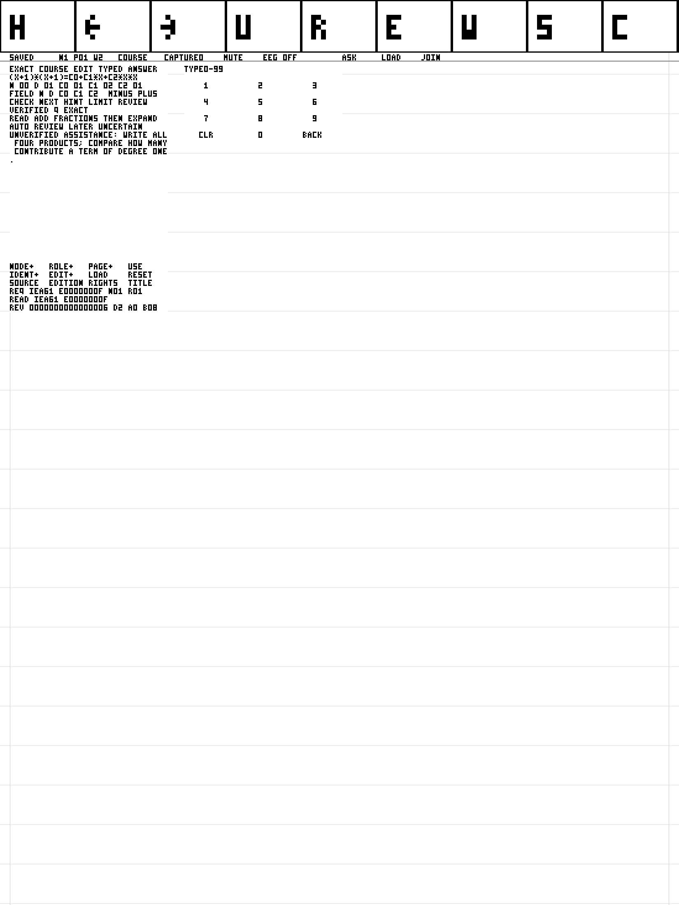

Local school in the actual LemmaSim workbook
Ordinary Study in the selected School23 client
The explicitly packaged School23 guest supports ordinary Student-mode school transport on the functional0.14 device profile. In the native drawing window, choose Study. Choose the account-free local sample, or open the private pairing file issued by your school. Courses show titles and stable identities/editions, with bounded pagination. Install the selected publication, wait for its guest installation receipt, and tap COURSE on the paper. There is no course-ID remapping or host command construction in this path.
Work, ink, mathematical checking, explicit Save and recovery remain guest operations. On the current course activity tap ASK, choose Bind ASK in Study, then tap JOIN on the paper after the invitation installs. Permitted help transports the authored hint for that exact context; tap LOAD to let the guest validate and render it. Independent activities retain their assistance prohibition. Sensor refusal leaves this workflow available.
After Save, tap SEND on the paper to capture an immutable submission and commit its local outgoing queue. Choose Send committed work in Study. A school commit response is distinct from the guest's later durable queue acknowledgement; Guest receipts shows either the new pointer Commit or a recovered pointer read. Retry retains the original attempt, publication, work revision and policy. Version2 admits up to512 raw ink chunks within262144bytes; unsupported reasoning remains opaque reviewable work. X beside SEND withdraws pending local work. Cancel help revokes the bound live school session; Disconnect clears the connection while preserving guest work.
Feedback opens the learner's bounded feedback list. Due reviews selects the original publication and task; bind a fresh ASK after opening it so the subsequent guest response retains its review identity. Opening alone does not complete a review. The school requires the linked exact response or versioned human assessment before completion and the next schedule.
The browser distribution exposes the same Study actions and executes the same guest. Select Student mode, create a fresh medium through the real initializer, or reopen an existing named OPFS medium. Close/Open runs cold recovery from its durable bytes. Pairing credentials are live connection state and are cleared by reset, restore and close.
Qualification in progress: source-bound queue, compiler, controller and protected school cases are separate from the complete native/browser workflow. Current execution status and exact source-bound reproduction paths are in the Task009 checkpoint. The diagnostic commands below retain their historical scope and admission restrictions.
Export and restore native state
The explicitly packaged native logical2 edition supports execution checkpoints in Student mode. Its bundle manifest declares lemma-silicon-fast-softtlb/0.2.0. Launch that bundle normally; no environment variables or Developer injection controls are needed. In the drawing window choose Pause, then Export state and a new directory. Restore selects a previous state directory and creates an isolated fork. The source medium remains unchanged. Reconnect Study and bind a fresh ASK after restore; school credentials and live tablet handles are detached. A rejected state preserves the running machine and current admission.
Save remains the guest operation for durable notebook work. Export state additionally captures pending execution, clocks, timers, interrupts, storage, queued transport, DMA and audio. Restore requires the exact native runtime, profile, guest and source identity. This edition does not import browser/RTL microstate or external companion storage. The version2 continuation contract and finite qualification give those limits.
For a local source build, prepare and package the exact audited pair with the public selector. The source archive and build directories below are the retained Task009 cohort; use new output directories.
python3 scripts/lemmasim build --checkpoint-binding native-logical2 \
--backend qemu --profile lemma-silicon-dev/0.14.0 --workload school-notebook \
--guest-build build/kernel/task009-school23-notebook-a20 \
--guest-source-root build/task009/school23-mm-source-a6
python3 scripts/lemmasim native-bundle-build --checkpoint-binding native-logical2 \
--profile lemma-silicon-dev/0.14.0 --school-deployment \
--notebook-build build/kernel/task009-school23-notebook-a20 \
--initializer-build build/kernel/task009-school23-initialize-a19 \
--guest-source-root build/task009/school23-mm-source-a6 \
--sample-course build/school/task009-sources-a1/sample.lcp \
--output-dir build/task009/school23-native-logical2-NEW
python3 scripts/lemmasim session --backend qemu --profile lemma-silicon-dev/0.14.0 \
--native-bundle build/task009/school23-native-logical2-NEW \
--workload notebook --mode student --disk YOUR_SAVED_MEDIUM.raw \
--session-dir build/task009/student-state-NEW --paused
Task009 ordinary native qualification
The source-bound School23 native run uses build/task009/school23-native-a9 and the ordinary Student Study and paired Teacher panels. Its actual guest writes and Saves a96-stroke proof, sends an opaque version2 artifact, loses the unconsumed acknowledgement by closing the session, and cold-replays the exact original envelope. The school returns the same attempt and commit; the guest then durably commits its acknowledgement. The teacher opens the original prompt, rubric, assistance history and rendered immutable work before recording feedback.
The same run opens the original due task and creates a new212-stroke written response. All858 complete nine-word pen records match the school artifact. Human assessment86 completes the old due item at87 and creates a separately justified next schedule at88; the original attempt, checker outcome and publication remain unchanged. The60-second schedule is an explicit integration policy, not a retention experiment. A revoked pairing rejects Feedback while local pen and explicit Save still work; a new teacher-issued invitation restores access.
Its real committed RV64 suggestion changes the next permitted authored hint, reaches guest acceptance and the actual paper controller. Training and audited compilation were reused; worker execution and this workflow are fresh. The terminal record used23,779,000,096 of the original24-billion functional units and closed normally before its unchanged3600-second deadline. Reproduction commands, source identities, original failed observations and raw-retention checks are retained in the Task009 course evidence. This qualifies the exercised synthetic native workflow; browser completion, arbitrary exact continuation, physical qualification and educational benefit have separate obligations.
Historical owner-local diagnostic bridge
The school client bridge uses the existing Lean course publisher, immutable package installer, Store, workbook, exact checker, drawing surface and tutor-action admission. School enrollment, publication and assistance decisions execute in Lemma.School.Authority. Python conveys JSON and package bytes through the normal modeled UART. It does not construct documents, install journal records, draw hints or decide school policy.
This foundation supports an owner-local Developer or Laboratory session with the admitted lemma-silicon-dev/0.14.0 guest. The local OS owner is the trust boundary. An explicit guest JOIN admits a versioned invitation, and school assistance/3 must match its full authority digest, durable binding record, generation, guest deadline and policy. The hosted authority resolves that record to the principal and enrollment. This integrity boundary does not establish authenticated remote enrollment. Endpoint discovery inside the guest and arbitrary course identifiers with practical selector latency remain unfinished.
Install and study
First initialize the school, publish a validated unit, and enroll the learner through scripts/lemma-school. Start an admitted ordinary LemmaSim workbook, pause it, and set the shell variables below to those real paths and identities. Use an unused build/ directory for every bridge invocation.
python3 scripts/lemmasim_school.py install \
--school-root "$school_root" --session-dir "$session_dir" \
--school "$school_id" --actor "$learner_id" --course 1 --revision 1 \
--transaction 1001 --work-dir build/school/client-install-NEW
RAW_SCHOOL_COMMAND_ADMITTED acknowledges raw input admission only. Run the guest until its actual 4b1 installer outcome reports success and a positive durable sequence. The COURSE control opens the existing chooser. Select the publication and LOAD it; read the unit, choose its exercise and USE it. All drawing, typed answer editing, checking, persistence and display publication occur in the guest. The conventional fresh chooser starts at package1/edition1; ID+ and EDIT+ advance one value per tap. The reference scenario uses an ordinary authoring variant with identity1 to keep this path bounded.
Join a school session and obtain permitted help
On a selected course node, tap ASK and let the guest finish that control, then pause. Its complete 721/722/723 records identify the current source, edition, node, document revision, object, grants, clock window and fresh guest action session. The school session binds that exact guest context and the immutable enrolled publication.
python3 scripts/lemmasim_school.py join \
--school-root "$school_root" --session-dir "$session_dir" \
--school "$school_id" --actor "$learner_id" --course 1 --revision 1 \
--session study-1 --lifetime-ms 3600000 \
--work-dir build/school/client-join-NEW
python3 scripts/lemmasim_school.py help \
--school-root "$school_root" --session-dir "$session_dir" \
--school "$school_id" --actor "$learner_id" --course 1 --revision 1 \
--session study-1 --policy 1 --transaction 1002 \
--work-dir build/school/client-help-NEW
JOIN first transports an immutable invitation package60000, at the current ASK sequence. Run the guest until its actual 4b1 commit, then tap JOIN at the end of the same workbook control bar. A 727 receipt means that the guest accepted the exact school binding; its visible invitation is separately rendered by the guest. Then run the help command above. The public authored hint comes from that publication's activity policy. An independent activity withholds assistance. The authority rejects a different school, learner, publication, policy, cancelled or expired school session, stale execution generation, and a different complete guest ASK context. A new ASK creates a new guest action session; explicitly refresh JOIN for that context before requesting help. The bridge never calls a proprietary model.
Run the guest until its actual immutable assistance package60001 commits, then tap the guest LOAD control beside ASK. The guest checks the version3 school binding and the still-current action session, consent, document revision, object, source/edition/node, grants, sequence, start/deadline and visible annotation before rasterization. While joined, the guest rejects school-unbound legacyv2 assistance. The text begins UNVERIFIED ASSISTANCE:. No school hint is mathematical checking evidence or an independent outcome. 725 is a raster acceptance receipt; only completed controller pixels demonstrate presentation.
ASK, assistance LOAD, JOIN and ordinary chooser LOAD taps arriving while Store, checker or display work is pending are retained in one bounded guest intent slot. The chooser request snapshots its notebook page, requested identity and edition; a changed context cancels the stale intent before any read. Identical pending taps coalesce; a different pending intent gets an explicit Busy receipt. Dispatch waits for the real queues and framebuffer ownership and consumes the intent once. No model request or school enrollment is invented by host input admission.
A changed page or selected publication cancels the queued chooser LOAD with status175. The older mathematics-only backlog and package format retain their existing meanings.
Rejected assistance releases its unpublished text/control work before returning to the notebook. It preserves the rejection receipt, consumed-action high water and saved document. A fresh ASK can then dispatch instead of waiting on a view that has already been rejected.
Explicit assistance LOAD and JOIN also leave the saved source reader's expected CRC and node. Those expectations belong to the original publication; carrying them into a different envelope would reject valid help before its action checks. Each envelope still passes full package integrity validation and the current school, document and action admission.
The existing ASK sequence is greater than both its previous value and the notebook's observed durable Store frontier. Cold recovery therefore advances beyond committed invitation and assistance editions. A retry of the exact same joined ASK reuses its original invitation; changing school or execution generation on that same ASK requires a fresh ASK instead of replacing immutable bytes. School lifetime uses the authority's clock; guest deadlines use the existing guest ticks. They are separate time domains. Ordinary monotonic schools omit --now; --lifetime-ms requests a lifetime that Lean turns into an absolute expiry. Explicit --now is for schools configured with the controlled clock.
python3 scripts/lemmasim_school.py receipts \
--school-root "$school_root" --session-dir "$session_dir" \
--school "$school_id" --actor "$learner_id" --course 1 --revision 1 \
--work-dir build/school/client-receipts-NEW
Receipts preserve the actual raw records. Supplying --decision ID --receipt-sequence N records guest raster acceptance only when that exact 725/N exists. The maintained scenario separately compares every hint-body pixel and every durable package byte; it does not infer delivery from the school response.
scripts/lemmasim school exposes the same install, join, help, submit, review and receipts commands. Submit copies explicit typed values and actual guest checker UART observations into the school, retaining the raw observation artifact and a separate hosted Lean comparison; it does not recognize ink or certify an arbitrary handwritten proof. Review selects the original due publication and policy, then the existing COURSE/LOAD/node controls open it. The connected scenario observes that actual opening after restarting the school and a new guest CPU.
An unsupported independent proof task deliberately receives guest USE rejection241 instead of becoming an exact-checker goal. Its receipt precedes the completed home redraw. Unsupported USE commits no new checking selection or reader location: reopening COURSE resumes the acknowledged exact exercise, and ordinary NEXT controls return to the independent task. Read the task, draw and Save the work, then submit an explicit opaque artifact with submit --teacher-review --work-artifact PATH and the declared activity/task/typed metadata. This path supplies no guest mathematical verdict. Lean retains the work reference and determines the published task's unsupported/teacher-review result and independence classification.
For a running loopback school service, supply --school-endpoint http://127.0.0.1:8790/v1/command. The bridge forwards the same bounded JSON, refuses redirects, and uses no proxy. Otherwise it uses the normal school transport's OS mutex around the pinned Lean executable. A running authority and a second direct writer cannot silently share mutable storage.
Reproduce the bounded connected scenario
scripts/check_school_client.py --help lists the explicit actual inputs: enrolled school root and executable, identity1 authored package with a declared edition, guest-initialized empty medium, source-admitted native bundle and unused output directory. It exercises installation, source navigation, varying exact coefficient submissions, ASK/join/help, complete visible hint pixels, rejection of completed-action replay, raw drawing, explicit Save, and an independent new CPU with the acknowledged medium. It has a prospective4-billion execution-unit/1800-second aggregate limit and retains failures. A reused audited guest remains reused production; its new run is fresh execution. Fast execution units are not RTL timing, browser performance, physical-device qualification or educational benefit.
Package LOAD phases retain the existing course workflow's400-million execution-unit bound; ordinary text views remain100 million. The source-derived5263-byte publication first became fully visible at111,000,021 units. The earlier generic100-million LOAD failures remain failed observations. A separate retained navigation failure exposed the independent pixel observer's historical J-font transcription error; correcting its fixed literal rows made the already displayed body match every pixel. No expected pixels are supplied to the guest.
An admission rejection receipt can precede the guest's complete background redraw. The observer separately verifies the entire home body plane, Saved label and a new controller completion under the existing500-million close bound, then measures a fresh ASK under its unchanged150-million bound. The earlier150-million observation that included unfinished predecessor work remains failed. Before Save, an actual local MUTE control repaints the ordinary bar; its receipt and modeled controller consent state are retained. The independent cold comparison still covers every medium byte and every controller pixel.
A MUTE control receipt or unrelated controller completion does not demonstrate its queued bar repaint. The observer requires that receipt, zero modeled consent and every CAPTURE, MUTE, EEG OFF, ASK, LOAD and JOIN label pixel under the existing150-million control bound. It also observes a new actual ink Saved receipt and the Saved label under the existing300-million ink bound before its first explicit Save tap. Explicit Save confirms that acknowledged work under its unchanged150-million bound and must produce its own new receipt. Earlier failed Save taps remain failed observations; they are not silently retried.
ASK also requires a strictly newer controller completion after its own receipt and idle observation, plus every control-bar label, within the same150-million bound. Exact checking retains its original200-million bound: after the actual checker reply, new Saved acknowledgement and idle observation, a newer completed frame must contain Saved, the whole course body and the exact requested/loaded publication controls. The observer samples every100,000 execution units and records the public paper sequence watermarks. A receipt alone does not establish that the next ordinary navigation control is ready.
The final connected run build/school/client-native-a12/result.json passed in371.831 seconds using3,305,100,388 execution units, with every consumed source still equal. It used the current A8 hosted authority and all-four-role A15 audited guest archive. The record covers explicit JOIN, visible school help, actual varying exact work, assisted and independent teacher-review records, replay and changed-document rejection, local MUTE, acknowledged Save, every256MiB medium byte and every3,630,000 controller pixel on a new CPU, forced school-process restart and the original one-week due review. A normally published edition3 changed review timing to60 seconds, reached actual Verified and its visible due review, and preserved the edition2 attempt. The source-bound evidence index retains the earlier failures, diagnostic continuations and deliberate interruption with their original limits. This remains owner-local synthetic native functional evidence.

The focused Lean test nix develop --no-write-lock-file --command lake env lean --run tests/school/Client.lean executes the real package/action validator through an independent bounded-memory fixture. This covers scope, cancellation, expiry, revision and replay admission; it does not by itself demonstrate a running client or visible delivery.